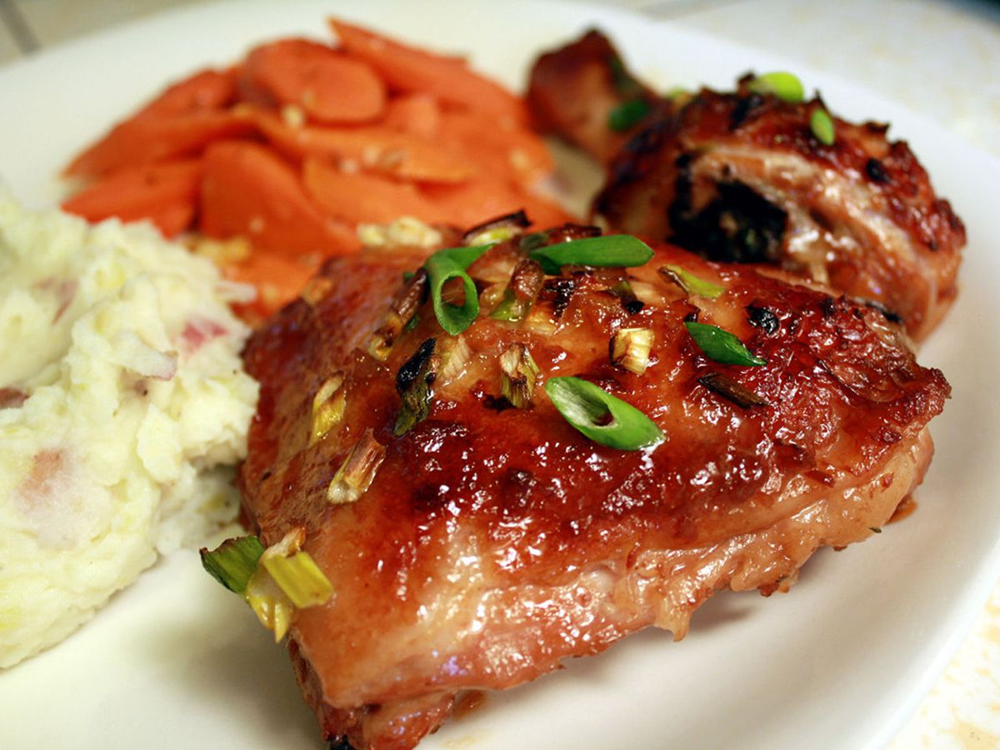

Honey Glazed Chicken

Baked Asian-Style Honey Chicken Ready For Family Night
This Asian-style honey chicken uses a marinade of ginger,
soy sauce, onion, and garlic to give this dish delicious flavor
without a lot of fuss.
The first time I made this I pretty much followed the recipe
directions and ingredients. The second time, I got a little more
creative and we ended up liking it even more.
Ingredients
- 1 Whole Chicken, Cut Into Pieces
- 3 tbsp Chopped Opnion
- 2 tbsp Soy Sauce
- 2 tbsp Honey
- 1 tbsp Minced Fresh Ginger Root
- 1 tsp Minced Garlic
- 1/4 Cup Chopped Green Onions
Steps
- Arrange chicken pieces in a 9x13-inch baking dish.
Combine onion, soy sauce, honey, ginger, and garlic in a small bowl;
spoon mixture over chicken. Cover the dish and refrigerate to marinate for
1 hour, turning chicken once.
- Preheat the oven to 425 degrees F (220 degrees C).
- Bake chicken with marinade in the preheated oven for 30 minutes.
Turn chicken over and top with green onions, then continue baking until chicken
is no longer pink in the center and the juices run clear, 10 to 15 minutes.
An instant-read thermometer inserted into the center should read at least 165 degrees F (74 degrees C).